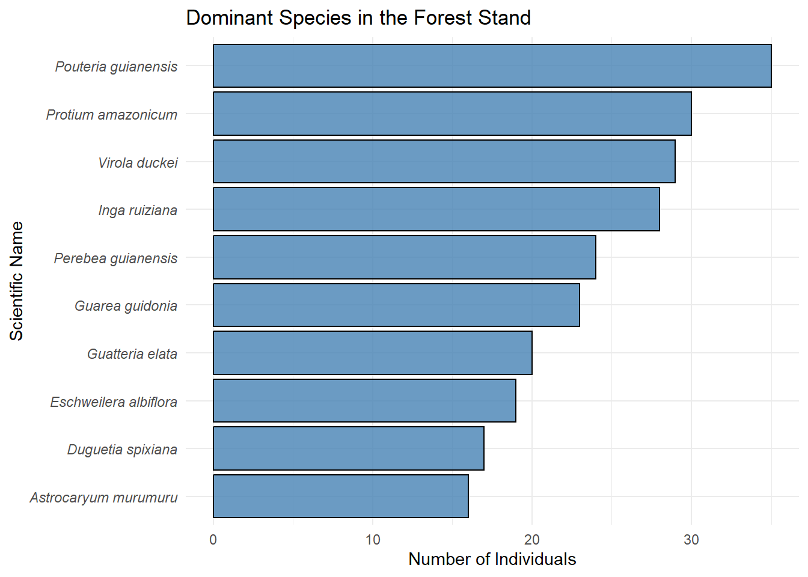
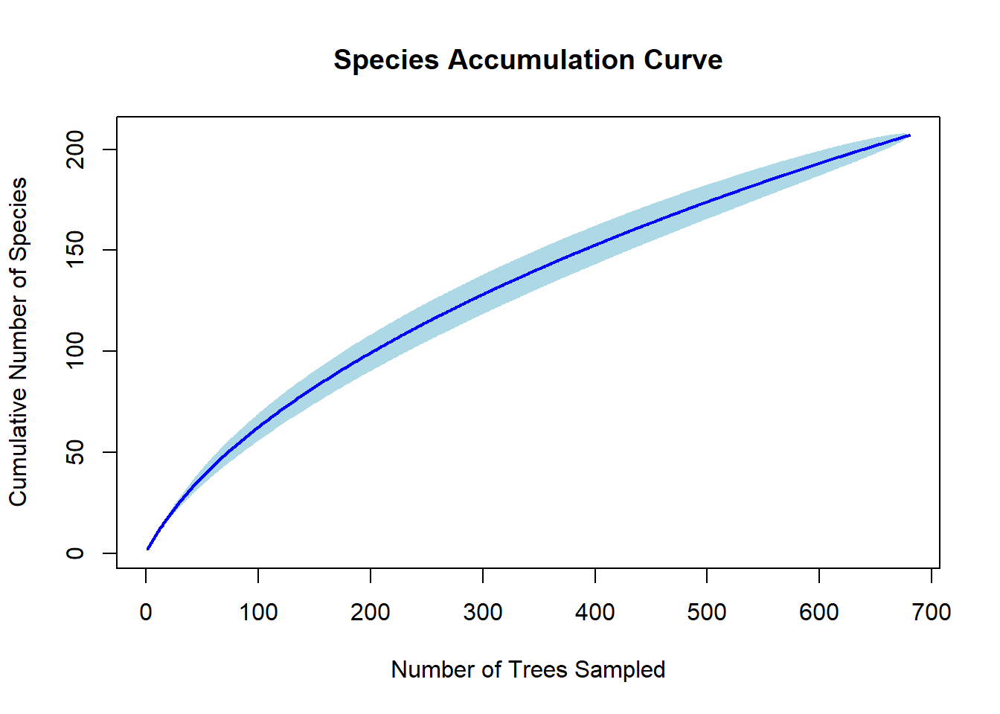
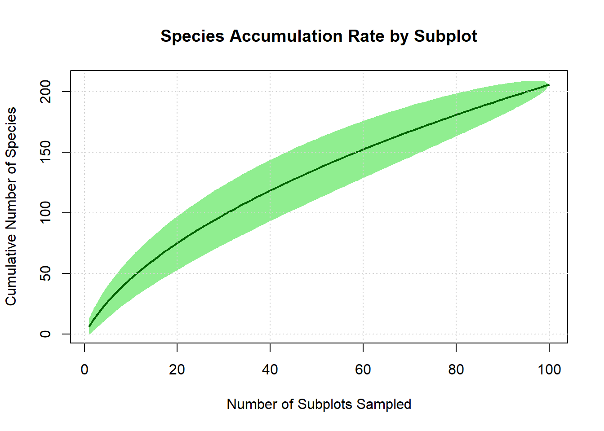
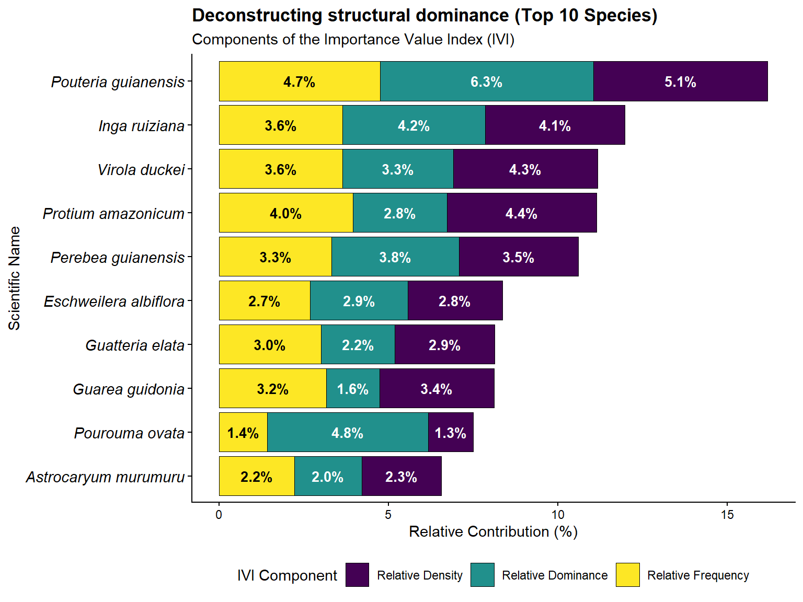

3 Chapter 3: Forest Composition & Structure
With our inventory data cleaned and standardized, we can now explore the ecological characteristics of our forest stand. Two of the most fundamental questions in any forest inventory are: What species are growing here? and How big are they?
In this chapter, we will use the ggplot2 package (which is loaded automatically with tidyverse) to create clear, publication-ready visualizations of our forest’s composition and structure.
3.1 Species Composition
Tropical and Neotropical forests are incredibly diverse. Visualizing the abundance of every single species in a single chart can result in a cluttered and unreadable mess. Instead, a standard practice is to isolate and visualize the most dominant species to understand the primary makeup of the canopy.
Let’s calculate the top 10 most abundant species in our dataset and create a horizontal bar chart.
# Calculate species frequencies and filter for the top 10
top_species <- inventory_clean %>%
count(Scientific_Name, name = "Count") %>%
arrange(desc(Count)) %>%
slice_max(order_by = Count, n = 10)
# Create a horizontal bar chart
ggplot(top_species, aes(x = reorder(Scientific_Name, Count), y = Count)) +
geom_col(fill = "steelblue", color = "black", alpha = 0.8) +
coord_flip() + # Flips the axes for easier reading of species names
labs(
title = "Dominant Species in the Forest Stand",
x = "Scientific Name",
y = "Number of Individuals"
) +
theme_minimal() +
theme(
axis.text.y = element_text(face = "italic") # Standard practice: italicize scientific names
)
Figure 3.1: Top 10 most abundant tree species in the inventory.
Interpretation of species dominance
Plot observations: The horizontal bar chart visualizes the ten most abundant tree species within the sampled forest stand, ranked by the number of individuals. Pouteria guianensis emerges as the clear dominant species with approximately 35 individuals, followed closely by Protium amazonicum (30 individuals) and Virola duckei (29 individuals). The gradual decline in stem counts among the top tier—transitioning down to species like Eschweilera albiflora and the understory palm Astrocaryum murumuru—illustrates a heavily skewed abundance distribution where a small handful of species constitute a significant structural proportion of the stand.
Ecological theory and context: This pattern of structural dominance is a foundational concept in tropical forest ecology. While lowland Amazonian forests are globally renowned for their immense alpha diversity, they are rarely egalitarian. The plot perfectly reflects the Hyperdominance Theory, which posits that despite the Amazon basin harboring an estimated 16,000 tree species, a remarkably small fraction—roughly 227 species (1.4%)—accounts for exactly half of all individual stems across the biome.20
Several of the taxa identified in this plot are classic hallmarks of this phenomenon. Genera such as Eschweilera, Protium, and Astrocaryum are frequently documented as hyperdominant oligarchs in terra firme and restinga ecosystems across the western and northwestern Amazon.
This skewed rank-abundance distribution can be explained by two primary ecological mechanisms:
Oligarchic forest structure: As described by Pitman et al. (2001),21 certain highly competitive, shade-tolerant species form widespread “oligarchies.” These species possess functional traits that allow them to successfully recruit, survive, and dominate across a broad range of environmental gradients and gap-phase dynamics, effectively out-competing rarer specialists.
Environmental filtering: The high abundance of specific dominant taxa often reflects local adaptation to specific edaphic (soil) conditions or hydrological regimes. Visualizing this dominance is a critical first step in forest attribute analysis, as these highly abundant species disproportionately drive ecosystem functioning, aboveground biomass accumulation, and regional biogeochemical cycling.
3.2 Quantifying biodiversity: diversity indices
While our bar chart shows the most common species, it does not tell us the overall diversity of the stand. To quantify this, ecologists rely on diversity indices. The two most common are the Shannon-Wiener Index (\(H'\)) and the Simpson Index (\(D\)).
Shannon-Wiener Index (\(H'\)): Accounts for both abundance and evenness of the species present.22 A higher value indicates higher diversity.The formula is:
\[H' = -\sum_{i=1}^{S} p_i \ln(p_i)\] where \(p_i\) is the proportion of individuals belonging to the \(i\)th species.
Simpson Index (\(D\)):23 Measures the probability that two individuals randomly selected from a sample will belong to the same species.Let’s use the vegan package to calculate these metrics for our plot.
## Warning: package 'vegan' was built under R version 4.4.3## Warning: package 'permute' was built under R version 4.4.3# First, we need a table of species counts (a community matrix)
species_counts <- inventory_clean %>%
mutate(Scientific_Name = ifelse(Scientific_Name == "", "Unknown", Scientific_Name)) %>%
count(Scientific_Name) %>%
pivot_wider(names_from = Scientific_Name, values_from = n, values_fill = 0)
# Calculate Shannon Index
shannon_index <- diversity(species_counts, index = "shannon")
# Calculate Simpson Index
simpson_index <- diversity(species_counts, index = "simpson")
# Calculate Species Richness (Total number of unique species)
richness <- specnumber(species_counts)
# Print the results
cat("Species Richness (S):", richness, "\n")## Species Richness (S): 207## Shannon Index (H'): 4.639## Simpson Index (D): 0.982Interpretation of Alpha diversity metrics
The calculated alpha diversity metrics reveal an exceptionally complex and species-rich forest stand. A Species Richness (S) of 207 indicates a vast array of distinct taxa coexisting within the sampled area. The Shannon-Wiener Index (H’) of 4.639 is notably high; while typical ecological communities generally yield values between 1.5 and 3.5,24 scores exceeding 4.0 are almost exclusively the hallmark of highly intact tropical rainforests.25 Finally, the Simpson Index score of 0.982 (interpreted here as Simpson’s Diversity Index, \(1 - D\)) suggests that if two individual trees were randomly sampled from this stand, there is a 98.2% probability that they would belong to entirely different species.
Ecological theory and context
These metrics highlight a fascinating structural dichotomy typical of the Amazon basin. While the previous visualization demonstrated that a handful of species dominate the overall stem count (hyperdominance), the extremely high Shannon Index and Species Richness underscore the ecological importance of the “long tail” of rare species.
This extreme diversity is maintained by several interacting ecological mechanisms:
The Janzen-Connell Hypothesis: This foundational theory explains how such high richness (S = 207) can be sustained without competitive exclusion. It posits that host-specific natural enemies (such as specialized herbivores and fungal pathogens) disproportionately attack the seeds and seedlings of highly abundant species near the parent tree.26 This density-dependent mortality prevents any single species from entirely monopolizing the stand, actively maintaining space for hundreds of rarer species to recruit and persist.
Niche partitioning and gap dynamics: The high Shannon Index (H’) reflects not just raw species count, but a relatively equitable distribution of those rare taxa across the available microhabitats. Small-scale disturbances, such as the localized canopy gaps caused by windthrow or natural tree falls, create shifting mosaics of light availability that allow different functional groups to coexist.
Metric sensitivity: It is important to note the mathematical weighting of these indices for forest attributes analysis. The Shannon Index (\(H'\)) is highly sensitive to the presence of rare species (the long tail), whereas the Simpson Index is weighted more heavily toward the evenness of the most common species.27 The fact that both indices are exceptionally high confirms a stable, highly diverse ecosystem structure.
3.3 Species accumulation curves
In dense tropical canopies, a critical question is: Did we sample a large enough area to capture the true diversity of the forest?
A Species Accumulation Curve plots the number of new species discovered as the sampling effort (number of trees or plots) increases. If the curve flattens out (reaches an asymptote), our sampling effort was sufficient. If it is still climbing steeply, many rare species remain undiscovered.
presence_matrix <- inventory_clean %>%
# 1. Add this filter to remove empty strings first!
filter(Scientific_Name != "", !is.na(Scientific_Name)) %>%
# 2. Proceed with the rest of the code
mutate(Presence = 1, Tree_Index = row_number()) %>%
pivot_wider(names_from = Scientific_Name, values_from = Presence, values_fill = 0) %>%
select(-Plot_ID, -Tree_ID, -Common_Name, -DBH_cm, -Easting, -Northing, -Tree_Index)
accum_curve <- specaccum(presence_matrix, method = "exact")## Warning in cor(x > 0): the standard deviation is zeroplot(accum_curve, ci.type = "poly", col = "blue", lwd = 2, ci.lty = 0, ci.col = "lightblue",
xlab = "Number of Trees Sampled",
ylab = "Cumulative Number of Species",
main = "Species Accumulation Curve")
Figure 3.2: Species accumulation curve showing the rate at which new species are encountered as sampling effort increases.
Interpretation of the species accumulation curve
The Species Accumulation Curve (SAC) visualizes the rate at which new species are discovered as the sampling effort increases (measured here by the cumulative number of individual trees sampled). The solid blue line represents the expected species richness, flanked by a shaded 95% confidence interval ribbon. Notably, after sampling nearly 700 individual stems, the cumulative species count exceeds 200, yet the curve remains strictly ascending. It shows no clear sign of reaching a plateau or asymptote.
Ecological theory and context
In forest attribute analysis, the SAC serves as a critical diagnostic tool for evaluating sampling completeness. An asymptotic curve (one that flattens out) would suggest that the community has been exhaustively surveyed and that further sampling would yield few, if any, new species.
However, the continuous upward trajectory observed in this plot is precisely what ecologists expect when surveying highly intact, hyper-diverse tropical ecosystems, such as those found across the northwestern Amazon.28 This pattern reinforces the diversity metrics calculated previously and is driven by the following factors:
The rare species tail: As established by the high Shannon and Simpson indices, tropical forests contain a massive proportion of extremely rare taxa. In standard field plots, many of these species occur as “singletons” (represented by only one individual) or “doubletons.” Because this pool of rare species is so vast, every new sampling transect or plot continues to slowly add unique taxa to the overall inventory, preventing the curve from flattening.29
Estimating true richness: Because the empirical count (207 species) has not reached an asymptote, we can conclude that the observed richness is an underestimate of the true community richness. In these scenarios, researchers typically apply non-parametric asymptotic estimators (such as Chao1, abundance-based coverage estimator (ACE), or Jackknife methods) to mathematically extrapolate where the curve would eventually stabilize if the entire forest were sampled.30
library(vegan)
library(tibble) # Needed to convert the Plot_ID column into row names
# 1. Create a community matrix grouped by Subplot (Plot_ID)
subplot_matrix <- inventory_clean %>%
# Ensure we have no blank species names
filter(Scientific_Name != "", !is.na(Scientific_Name)) %>%
# Count the number of each species PER subplot
count(Plot_ID, Scientific_Name) %>%
# Pivot into a wide matrix (Rows = Plot_ID, Columns = Species)
pivot_wider(names_from = Scientific_Name, values_from = n, values_fill = 0) %>%
# 'vegan' requires the matrix to be purely numeric, so we move Plot_ID to the row names
column_to_rownames(var = "Plot_ID")
# 2. Calculate the accumulation curve using the subplots
accum_curve_subplot <- specaccum(subplot_matrix, method = "exact")
# 3. Plot the results
plot(accum_curve_subplot,
ci.type = "poly", col = "darkgreen", lwd = 2, ci.lty = 0, ci.col = "lightgreen",
xlab = "Number of Subplots Sampled",
ylab = "Cumulative Number of Species",
main = "Species Accumulation Rate by Subplot")
# Add a grid for easier reading of the asymptote
grid()
Figure 3.3: Species accumulation curve showing the cumulative discovery of species as the number of sampled subplots increases.
Interpretation of the Sample-based accumulation rate
While the previous curve measured sampling effort by individual stems, this Species Accumulation Curve visualizes richness against the number of spatial units (subplots) surveyed. Across the 100 subplots sampled, the cumulative species count climbs to 207. The curve (solid green line) remains steadily ascending, mirroring the lack of an asymptote seen in the individual-based curve. Notably, the 95% confidence interval (light green ribbon) is widest in the intermediate stages of sampling, highlighting significant variability in the number of new species contributed by each randomly added subplot.
Ecological theory and context
In forest ecology, comparing an individual-based accumulation curve with a sample-based (subplot) accumulation curve is crucial because it introduces the dimension of physical space. Individual-based models mathematically assume that trees are randomly mixed throughout the forest like a well-shuffled deck of cards. However, this subplot-based curve captures the reality of how forests are actually structured on the ground.31
The persistent upward climb and the variability in this spatial curve are driven by two key ecological mechanisms:
Spatial aggregation (Clumping): In tropical forests, tree species are rarely distributed evenly. Instead, they exhibit highly clumped or aggregated spatial patterns, primarily due to dispersal limitation (where heavy seeds drop and germinate close to the parent tree) and localized gap dynamics.32 Because rare species are clustered, moving the survey into a new subplot often means stumbling into a completely new, localized pocket of taxa that were absent in all previously sampled units.
Beta diversity and microhabitats: As the sampling effort expands across 100 subplots, it inevitably traverses subtle environmental gradients—such as slight shifts in topography, soil moisture, or localized nutrient availability. This spatial turnover of species from one subplot to the next (beta diversity) means the physical expansion of the sampling area continuously introduces new habitat niches, bringing new specialist species into the cumulative inventory.
Ultimately, this plot confirms that the forest stand is not only hyper-diverse but structurally highly heterogeneous. For researchers, this demonstrates why large, contiguous sampling plots (or extensive subplot networks) are mandatory for accurately capturing carbon and biomass attributes in the Amazon, as small or highly localized plots will drastically underestimate community complexity.
3.4 Synthesis of Structure and Composition: The Importance Value Index (IVI)
Ecological Theory and ContextIn tropical forest analysis, evaluating a species based on a single metric can lead to severe ecological misinterpretations. For example, a highly abundant understory shrub might dominate the stand in pure stem count (Density) but contribute almost nothing to the physical architecture of the forest. Conversely, a massive canopy emergent might have a massive footprint (Basal Area) but be so rare that it is only represented by a single individual.
To resolve this, ecologists use the Importance Value Index (IVI), a foundational metric developed by Curtis and McIntosh (1951). The IVI synthesizes both composition and structure into a single numerical value, allowing us to rank the true ecological dominance and structural influence of each species within the community.
The index is calculated by summing three relative metrics (each expressed as a percentage of the stand total):
Relative Density (Composition): The number of individuals of a species divided by the total number of individuals of all species. This captures numerical abundance.
Relative Frequency (Spatial Distribution): The number of subplots (or quadrats) in which a species occurs divided by the total occurrences of all species. This captures spatial dispersion, ensuring that a species clumped in only one corner of the plot does not artificially skew the index.
Relative Dominance (Structure): The total basal area of a species divided by the total basal area of all species. This captures the physical and structural footprint of the taxa.
Mathematical Formulation The IVI for any given species is expressed as:
\[IVI = Relative Density + Relative Frequency + Relative Dominance\] (Note: Because each component is a percentage out of 100, the maximum possible IVI for a monoculture stand is 300).
Relevance to Amazonian DynamicsIn hyper-diverse Amazonian ecosystems, the IVI is the ultimate mathematical test of the Hyperdominance theory.33 When we calculate the IVI for this stand, the species that score the highest are not necessarily the most numerous, nor the largest. Rather, they are the “oligarchs” of the forest—species that successfully recruit in high numbers, spread widely across the landscape, and accumulate enough basal area to dictate the competitive dynamics, light availability, and carbon storage of the ecosystem.
library(dplyr)
library(tidyr)
library(knitr)
library(ggplot2)
# 1. Calculate individual Basal Area (BA) in square meters
inventory_ivi <- inventory_clean %>%
mutate(BA_m2 = pi * (DBH_cm / 200)^2)
# 2. Calculate Absolute Metrics per Species
species_summary <- inventory_ivi %>%
group_by(Scientific_Name) %>%
summarise(
Count = n(), # Absolute Density
Sum_BA = sum(BA_m2, na.rm = TRUE), # Absolute Dominance
Subplots_Present = n_distinct(Plot_ID) # Absolute Frequency
)
# 3. Calculate Relative Metrics and the final IVI
ivi_table <- species_summary %>%
mutate(
Rel_Density = (Count / sum(Count)) * 100,
Rel_Dominance = (Sum_BA / sum(Sum_BA)) * 100,
Rel_Frequency = (Subplots_Present / sum(Subplots_Present)) * 100,
IVI = Rel_Density + Rel_Dominance + Rel_Frequency
) %>%
arrange(desc(IVI))
# 4. Generate the table
ivi_table %>%
slice_head(n = 10) %>%
kable(digits = 2,
col.names = c("Species", "N", "Total BA (m2)", "Plots Present",
"Rel. Density (%)", "Rel. Dominance (%)", "Rel. Frequency (%)", "IVI"),
caption = "Importance value index (IVI) of the top 10 most structurally dominant species in the stand.")| Species | N | Total BA (m2) | Plots Present | Rel. Density (%) | Rel. Dominance (%) | Rel. Frequency (%) | IVI |
|---|---|---|---|---|---|---|---|
| Pouteria guianensis | 35 | 1.62 | 30 | 5.14 | 6.30 | 4.75 | 16.19 |
| Inga ruiziana | 28 | 1.09 | 23 | 4.11 | 4.22 | 3.64 | 11.97 |
| Virola duckei | 29 | 0.84 | 23 | 4.26 | 3.27 | 3.64 | 11.16 |
| Protium amazonicum | 30 | 0.71 | 25 | 4.41 | 2.78 | 3.96 | 11.14 |
| Perebea guianensis | 24 | 0.97 | 21 | 3.52 | 3.75 | 3.32 | 10.60 |
| Eschweilera albiflora | 19 | 0.74 | 17 | 2.79 | 2.88 | 2.69 | 8.36 |
| Guatteria elata | 20 | 0.56 | 19 | 2.94 | 2.18 | 3.01 | 8.13 |
| Guarea guidonia | 23 | 0.40 | 20 | 3.38 | 1.57 | 3.16 | 8.11 |
| Pourouma ovata | 9 | 1.22 | 9 | 1.32 | 4.75 | 1.42 | 7.50 |
| Astrocaryum murumuru | 16 | 0.51 | 14 | 2.35 | 1.99 | 2.22 | 6.56 |
# 5. Prepare data for the stacked bar chart
ivi_plot_data <- ivi_table %>%
slice_head(n = 10) %>%
pivot_longer(
cols = c(Rel_Density, Rel_Dominance, Rel_Frequency),
names_to = "Metric",
values_to = "Percentage"
) %>%
mutate(Metric = recode(Metric,
"Rel_Density" = "Relative Density",
"Rel_Dominance" = "Relative Dominance",
"Rel_Frequency" = "Relative Frequency"))
# 6. Generate the IVI component plot with percentage labels
ggplot(ivi_plot_data, aes(x = reorder(Scientific_Name, IVI), y = Percentage, fill = Metric)) +
geom_bar(stat = "identity", color = "black", linewidth = 0.2) +
# Add the text labels inside the stacked bars
geom_text(
aes(
label = sprintf("%.1f%%", Percentage), # Formats the number to 1 decimal place with a % sign
color = Metric # Maps text color to the metric to handle light/dark contrast
),
position = position_stack(vjust = 0.5), # Centers the text inside each stacked section
size = 3.5,
fontface = "bold",
show.legend = FALSE # Hides the text 'a' from the legend
) +
coord_flip() +
# Bar fill colors (Colorblind-safe Viridis)
scale_fill_manual(values = c(
"Relative Density" = "#440154",
"Relative Dominance" = "#21908C",
"Relative Frequency" = "#FDE725"
)) +
# Text colors to contrast with the bar fills
scale_color_manual(values = c(
"Relative Density" = "white",
"Relative Dominance" = "white",
"Relative Frequency" = "black" # Black text on the bright yellow background
)) +
labs(
title = "Deconstructing structural dominance (Top 10 Species)",
subtitle = "Components of the Importance Value Index (IVI)",
x = "Scientific Name",
y = "Relative Contribution (%)",
fill = "IVI Component"
) +
theme_classic() +
theme(
axis.text.y = element_text(face = "italic", size = 11),
legend.position = "bottom",
plot.title = element_text(face = "bold")
)
*Interpretation of the Importance Value Index (IVI)*Visual and tabular observations The combination of the data table and the stacked bar chart perfectly deconstructs the ecological footprint of the top 10 taxa in the stand, revealing exactly how each species achieves its dominance.
The ultimate oligarch: Pouteria guianensis clearly dominates the stand with an IVI of 16.19. The stacked bar chart illustrates that this dominance is highly balanced; it leads the community across all three components, boasting the highest Relative Density (5.14%), Relative Dominance (6.30%), and Relative Frequency (4.75%).
The midstory specialist: Protium amazonicum ranks fourth overall (IVI = 11.14). However, the visual deconstruction reveals its score is driven almost entirely by a high Relative Density (4.41%) and Frequency (3.96%), paired with a remarkably narrow Relative Dominance band (2.78%). This mathematically confirms our earlier spatial analysis: it is a highly numerous, widely dispersed, but physically small midstory species.
The canopy giant: Pourouma ovata provides the most striking structural contrast. Despite having a mere 9 individuals across 9 subplots (yielding extremely narrow purple and yellow bands in the chart), it secures the ninth-highest IVI in the stand (7.50). Its massive teal band highlights a Relative Dominance of 4.75%—the second highest in the entire plot—proving that these 9 rare stems are massive canopy emergents commanding immense basal area.
Ecological synthesis and carbon implications
This IVI analysis acts as the definitive synthesis of the structural chapters. It proves mathematically that raw stem count is a poor proxy for overall ecosystem influence. In hyper-diverse Amazonian ecosystems, a handful of large-diameter taxa command a disproportionate share of the stand’s physical space, thereby dictating light interception, localized gap-phase dynamics, and aboveground carbon storage.
Hans ter Steege et al., “Hyperdominance in the Amazonian Tree Flora,” Science 342, no. 6156 (2013): 1243092, https://doi.org/10.1126/science.1243092.↩︎
Nigel CA Pitman et al., “Dominance and Distribution of Tree Species in Upper Amazonian Terra Firme Forests,” Ecology 82, no. 8 (2001): 2101–17, https://doi.org/10.1890/0012-9658(2001)082[2101:DADOTS]2.0.CO;2.↩︎
Claude E Shannon, “A Mathematical Theory of Communication,” The Bell System Technical Journal 27, no. 3 (1948): 379–423; Anne E Magurran, Measuring Biological Diversity (John Wiley & Sons, 2004).↩︎
Edward H Simpson, “Measurement of Diversity,” Nature 163, no. 4148 (1949): 688–88.↩︎
Anne E Magurran, Measuring Biological Diversity (Blackwell Science, 2004).↩︎
Renato Valencia et al., “High Tree Alpha-Diversity in Amazonian Ecuador,” Biodiversity & Conservation 3, no. 1 (1994): 21–28, https://doi.org/10.1007/BF00115330.↩︎
Daniel H Janzen, “Herbivores and the Number of Tree Species in Tropical Forests,” The American Naturalist 104, no. 940 (1970): 501–28, https://doi.org/10.1086/282687.↩︎
Magurran, Measuring Biological Diversity (Blackwell Science, 2004).↩︎
Richard Condit et al., “Species-Area and Species-Individual Relationships for Tropical Trees: A Comparison of Three 50-Ha Plots,” Journal of Ecology 84, no. 4 (1996): 549–62, https://doi.org/10.2307/2261477.↩︎
Nicholas J Gotelli and Robert K Colwell, “Quantifying Biodiversity: Procedures and Pitfalls in the Measurement and Comparison of Species Richness,” Ecology Letters 4, no. 4 (2001): 379–91, https://doi.org/10.1046/j.1461-0248.2001.00230.x.↩︎
Gotelli and Colwell, “Quantifying Biodiversity.”↩︎
Gotelli and Colwell, “Quantifying Biodiversity.”↩︎
Condit et al., “Spatial Patterns in the Distribution of Tropical Tree Species.”↩︎
Steege et al., “Hyperdominance in the Amazonian Tree Flora.”↩︎